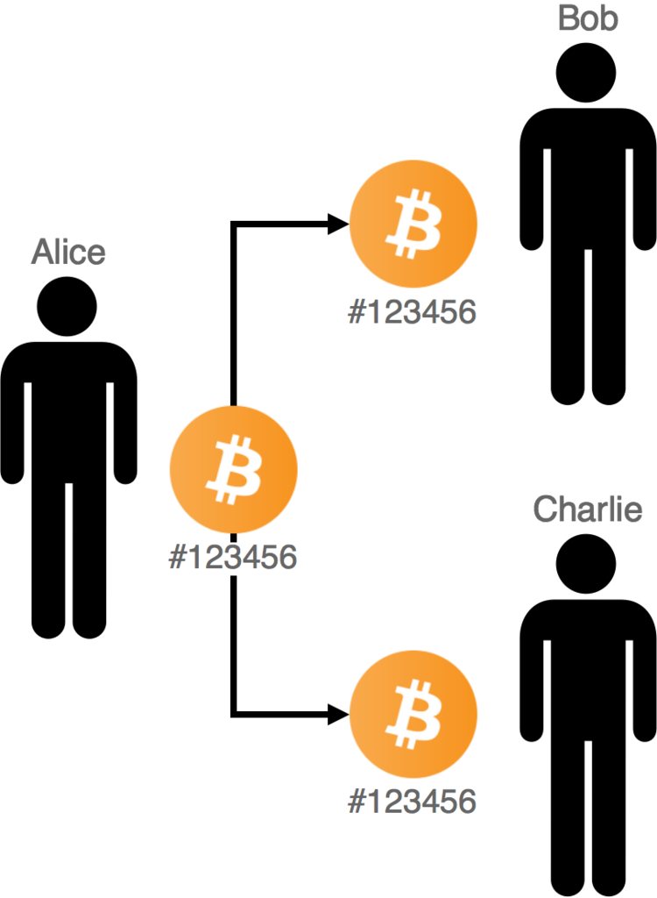

零确认的重要性
前言：比特币诞生至今已经近十年，但当被问及比特币是什么时，依然很少有人能够准确地解释清楚。《正本清源比特币》系列，将追寻中本聪的足迹，向读者展示比特币创造者对比特币的构想及背后蕴含的寓意，以纠正一些人对比特币的误解。
本文要纠正的，是大家对比特币安全模式的认知：零确认交易。
什么是零确认交易
与物理世界的资产不同，在数字世界里面，数据是可以复制的。这使得去中心化电子支付在很长的一段时间内无法实现，因为需要有一个中间媒介，来裁定一笔钱是不是已经被花掉，否则可能会出现一笔钱既转给了 A，又转给了 B 的情况。这就是大家说的双花问题 (Double Spending Problem)。
 中本聪设计的 PoW 方式，创造性地解决了这个问题：节点通过进行大量 SHA256 计算一个找到符合当前难度下的 hash 值，才能获得区块链的一次写入权，其它节点在接收到这个区块后将在当前最长链下继续相同的操作，使得区块链能不断扩展。如果想要双花这笔交易，则需要花费更多的计算以生成一条更长的链让其它节点接受。一笔交易所在的区块的高度与当前最新区块高度的差值即这笔交易的确认数，确认数越多，意味着要篡改这笔交易所需要的工作量也越大，即这笔交易被更改的可能性将随着时间的流逝而越来越小。
{kind=link}
比特币平均十分钟出一个区块，这使得交易信息在被打包入区块链前处于一个待确认的状态：一笔比特币交易广播到节点后，会进入该节点的内存池中，并向全网广播这笔交易。这笔还没有被打包的交易则称为零确认交易。
零确认交易并不是什么新技术，是否接受它、让零确认交易能得以足够广泛的应用，取决于商家，以及大众的认知。
零确认交易的设想
接受零确认交易意味着可以更快地结束用户的支付请求。毕竟与几乎即时完成的支付体验相比，要求用户在发送交易后至少需要等待一个确认才交付在大多数的场景下是不现实的。
中本聪在 2010 年回复 BM 质疑比特币十分钟确认太慢的时候，曾提出了 Payment Processor 的 说法，用于快速交易支付：
Quote from: bytemaster on July 28, 2010, 08:59:42 PM Besides, 10 minutes is too long to verify that payment is good. It needs to be as fast as swiping a credit card is today.
See the snack machine thread, I outline how a payment processor could verify payments well enough, actually really well (much lower fraud rate than credit cards), in something like 10 seconds or less. If you don’t believe me or don’t get it, I don’t have time to try to convince you, sorry.
source: https://bitcointalk.org/index.php?topic=423.msg3819#msg3819
由于这时候零确认只存在节点的内存池中，并没有被打包上链，有可能会被双花的风险，中本聪将零确认交易称为 “二等居民”，并在 Snack Machine 一帖中，给出了他的解决方案：
I believe it’ll be possible for a payment processing company to provide as a service the rapid distribution of transactions with good-enough checking in something like 10 seconds or less. The network nodes only accept the first version of a transaction they receive to incorporate into the block they’re trying to generate. When you broadcast a transaction, if someone else broadcasts a double-spend at the same time, it’s a race to propagate to the most nodes first. If one has a slight head start, it’ll geometrically spread through the network faster and get most of the nodes.
简单地说，中本聪在设计比特币的时候，认为零确认交易是可行的，其方法是节点将交易信息加到自己的内存池，如果发现有相同的 UTXO 则拒绝。由于试图双花的交易发出的时间将晚于发给商家的交易，商家只需要稍等片刻，待交易信息传递到绝大多数节点即可。
商家为何接受 / 不接受零确认支付
商家要接受现金之外的其它的支付方式，是需要考虑利弊的。一方面商家希望用户能够方便快捷地支付，以便能有更多的时间去服务更多的用户；另一方面，商家也需要考虑该支付手段是否足够安全，以免商品被购买后即无法收款。信用卡就是一个很好的例子，尽管不时出现信用卡盗刷导致坏单的情况，以及信用卡结算周期长（通常是一个月）并且还要收手续费（一般 VISA 以及 MasterCard 收取商家 2% 的手续费），但因为使用的人群广泛，在对于商家来说带来的客流量的收益大于可能的损失的情况下，店家乐于支持也是合情合理的事情。
对于很多商家（尤其是线下商家）来说，支付过程需要的时间过长几乎是不可容忍的，这客观上有着接受零确认的需求。因此，在讨论支持比特币支付的时候，我们更需要关注的是支持比特币支付能否做得比信用卡更好。这就转变成一个得失比的问题了：比如说，假设某商家因支持零确认支付而营业额可能将增加 20000 元，如果一个用户要求用比特币购买一杯 10 元的咖啡，商家接受到交易后确信这笔交易有 99% 的概率将进入下一个区块，那么它是否值得为了那 1% 的损失 10 元的可能性，而让用户在一边等上十分钟？
比特币支付目前还处于用户和商家互相促进的过程，更多的比特币用户的存在会让更多的商家愿意支持比特币支付，而更好的支付体验、更低廉的手续成本、更低的坏单率，会让更多商家让利于用户从而更多的培养更多的比特币用户。由于比特币去中心化的原因，商家无法像在信用卡盗刷后向相关机构投诉那样挽回损失，为了自身利益在接受零确认交易上自然容易对其安全性稍存疑惑。这是行业发展早期知识普及缺乏的结果。
因此，尽管像 Bitpay 这样的支付处理商很早就提供了接受零确认交易的选项，普及推广培养用户习惯也着实需要时间。而这随着比特币链上交易增多开始拥堵后情况变得更加糟糕：矿工在无法一次性打包完内存池的全部交易时会优先打包高手续的交易，为了缓解交易长时间没法确认的情况，BTC 引入了替换手续费 Replace-by-fee 的功能，允许用户将交易标记为 replaceable 并在这笔交易未确认前增加手续费来替换掉。这破坏了零确认交易的根基，加深了大众认为零确认交易不安全的印象，尽管商家可以选择设置成不接受 RBF 的交易。BCH 在分叉时除了修改了区块上限的大小之外，另外一个改动是移除了 RBF 的功能，这也是为其 “现金” 的定位恢复推动接受零确认交易打下基础。
接受零确认交易安全吗
零确认交易至今还没能得到广泛使用，很大原因是人们认为交易没有被确认的话是不安全的。客观地说，零确认交易被双花的可能性的确要比已经被打包的交易要大一些，但要注意的是，安全是一个相对的概念，脱离具体金额谈论零确认交易的安全性，似乎和 “抛开剂量谈毒性是耍流氓” 有异曲同工之处。本质上，零确认交易是否足够安全，是一个经济问题而非单纯的技术问题。
零确认交易是否安全，取决于成功双花这笔交易的概率是否足够低。而要双花一笔交易，需要矿工的参与。矿工愿意（配合用户）去双花的可能性如何呢？在比特币这个小世界网络中，信息的传递通常不超过两跳，这意味着，交易信息的传递非常迅速（现在只需要两秒即可几乎传遍全网）。在这样的网络里面，同个 UTXO 的两笔交易，先发出来的交易在传播时占了时机的优势，后发出来的交易（即使只差 0.01 秒）将难以在落后的情况下后来居上抢先传递到 51% 以上的节点的内存池里。
因此，要想成功双花，会有用户试图构建超低手续费的交易、利用节点设置的传递规则的差异以达到延缓那笔交易传播。事实上，绝太多数的双花企图都是这样做的，这可以在 DoubleSpend.cash 上查看到。商家在应对这样的交易时是可以做出风险评估的，毕竟目前主动构建低于目前正常手续费 1sat/byte 的交易本身就比较有嫌疑，支付提供商可以给予商家提示，让顾客等一个确认后再处于，或者多向几个不同的节点请求确认这笔交易是否存在，毕竟超低手续费的交易可能根本就没传递下去。类似的，Payment Processor 在接收到交易信息后也应该尽快地随机向多个节点发送收到的交易信息，以便交易信息能迅速传递到各个结点。
更重要的一点是，交易应该是由商家提供交易模板 (详见 BIP270 协议) 给用户签名，然后由商家来决定何时广播这笔交易。这让商家更具有主动权，进而大大降低了双花的风险：1，正常的情况下，商家的交易先出现在网络上，并会很快传递到大部分节点。试图双花的交易必然落后，从而被先见先得的规则拒绝；2，如果用户试着双花先把交易发出去，那么这笔比双花的尝试会很快传递到全网，随后商家在发送时将无法成功 (因为相同的 UTXO 已经进了矿工的内存池)，商家可以拒绝该用户的这笔支付。这样的机制可以在几秒中内就确定一笔交易的可接受情况，而且被双花诈骗的概率远低于信用卡。
另一个可能是矿工为了双花一笔交易，刻意将一笔用于双花的交易 A 隐藏而不向全网传播，待用于与商家支付的那笔交易 B 被商家承认后再试图将双花的交易 A 打包进区块链。此时该矿工出块的概率和所占的全网算力比相同，低于 51% 的情况下并没有较高的胜算（当然，高于 51% 的算力则是另外一个问题了）。而如果矿工成功出块将交易 A 打包而造成交易 B 失败，这就意味着该矿工对整个网络不诚实，没有将收到的交易信息及时广播，其它的矿工在发现后会因为自己的利益受损而对该矿工进行惩罚，将其暂时列入黑名单暂时切断连接甚至认为这是恶意双花而拒绝该区块。毕竟矿工们是竞争关系，维持与其它矿工的连接需要成本。这将使得该矿工接收其它节点的信息速度变慢，导致孤块率上升，最终出块的利润减少，长期来看也是得不偿失的事情。
能够想明白这个矿工之间的博弈，就会对 PoW 有了更深刻的了解：比特币本身是一个竞争的激励系统，它不只是单纯算力的堆积，更需要对整个网络维护的投入。矿工之间比拼的不是谁先找到块，而是谁能更快地将找到的块更快地传递给所有参与者。商家和用户并不需要信赖于具体的矿工，他们只需要将交易随机发到网络上，让矿工们争先恐后为其打包即可。
因此，虽然零确认交易存在着被双花的可能性，我们至少可以认为，在一笔交易的数额小于区块奖励并在区块浏览器上可看到的情况下，我们可以认为零确认接受这笔交易是几乎安全无误的。而根据今天的价格，这个数额足以满足大部分人的日常需求。
当然，关于接受零确认交易，可以做的还有很多。比如构建全网的双花检测系统，增加商家风险提示，甚至推出双花保险服务。总之，接受零确认交易的风险基本在可控的范围之内，剩下的则是一份愿意去尝试的好奇心。或许有一天，大众在使用比特币支付时不再需要关注确认数的多少。毕竟，有多少人知道支付宝的结算周期是多久呢 :)
现实的约束
“双花”问题在现实世界中对于商户来说不会是一个大问题，之所以我要强调是在 “现实世界” 当中，因为网上有很多双花成功的例子，也有很多人利用这些例子来证明比特币零确认是不安全的，但是这些人只是在实验室的理想条件下成功地将一笔款项发送到了两个不同的地址而已，当面临真实世界的约束条件时，这些手段都是不足为虑的。
因为在真实世界中，“双花”问题不是说你替换了自己的交易就结束了，而是说你替换了交易之后还要成功地欺骗接受小额零确认的商户，拿走了那件小额商品而且不被抓住，这才是真实世界中的真正的 “双花” 问题。
在真实的世界中，付款方从来都不会关心是否双花，因为双花对于付款方只有好处，而收款方商户才会关心是否被双花了，所以商户有动力去做一些防护措施来阻止双花。
商户想要不被双花，很重要的一点在于每笔交易都要至少给矿工支付最低限额的手续费，现在也许是 1sat/byte，扩容之后可能更低。怎样确保每笔交易都至少支付了最低限额的矿工费呢？很简单：由商户来设定交易模板。只要商户在设定交易模板时包含了足额的矿工费，那双花问题基本就不可能发生。
一个典型的交易场景应该是以下这种情况：
1、顾客到店点单，比如一杯咖啡； 2、商户计算好商品总额，包括咖啡的费用、税费、小费以及矿工费； 3、商户将商品总额输入交易模板，递交给顾客签名； 4、顾客填入输入地址及找零地址，签名交易后并将模板交还给商户； 5、商户拿回已签名的交易模板，发送给与其合作的矿工（也可能商户本身就是一个大矿工），确保输入交易的有效性，然后广播交易，交易完成； 6、顾客拿咖啡走人。
注意到了吗？整个交易流程当中是由商户去设定矿工费用，并且是由商户将交易发送给矿工进行广播验证的。矿工是商户的强力合作伙伴，商户有动力与矿工建立更紧密的联结，从而验证交易的有效性。
假设在第 5 步的时候，顾客拿了一个由自己广播的已签名的交易给商户怎么办？商户可以拒收这笔交易！
现实世界当中的商户是可以拒绝接受不符合要求的交易的！现实世界不是你教商户怎么做生意，而是你要按照商户的要求进行付款。不仅如此，这笔钱如果你想要回来，商户还可以收你处理手续费，因为你没有按照商户的要求进行付款。接下来你就等吧，先等你这笔交易经过 6 个确认到达商户的账户，然后商户再费劲把钱退回给你，顺便收你点手续费。面对如此严苛的现实条件，谁还会为了一杯咖啡去双花？
归根结底，我们一直说：世界上没有绝对的安全，而小额零确认是足够安全的。Shadders 的视频的 PPT 有句话说得很好：“Security is probabilistic, not binary.” 表达的也是同样的意思。一味地追求绝对安全是没有必要也是不可能达到的。
信任的进化
零确认之所以是个问题 其实在于比特币的哲学理解。比特币的双花是一个经济问题，它也是通过经济的方式来解决的。很多人认为比特币的核心在于互相不信任。但是其实比特币解决互相不信任问题的方法是把交易记录放在公开账本中，让骗子无所遁形。这意味着，比特币这个系统的可信度，不是建立在某一次交易的博弈过程上面，而是一个长期重复博弈的过程。
站在一个交易的角度想怎么防止作弊，防止双花，会带来极大的系统代价。在比特币领域，依靠的是博弈来制约，不能让少数的互相不信任的场景，来提高整体比特币上的诚信商户的低成本交易行为成本。为了解决 1% 的欺诈，提升 99% 交易的成本 10% 都是不可接受的。所以从这个角度来理解比特币上的双花，双花是因为发起支付的人不诚信带来的，我们在无法低成本去限制他让他诚信之外（原子交换），就要用经济手段惩罚被抓住的不诚信行为。
我们并不是要通过遍布警察的社会来防止犯罪发生。而是通过摄像头和监控，以及适当的代价来提升犯罪被抓住的几率来提升犯罪的成本。犯罪成本等于被抓住的几率乘以抓住后的判罚。判罚太重，会导致过失激情犯罪的人破罐子破摔。因为对于他们来说，极刑就是死而已。这是一个自然上限。所以单纯严苛的刑罚并不能降低犯罪率的，世界上没有绝对的安全，而事实上人们也不需要绝对的安全。我们大部分人平时出门不会每天穿防弹衣，我们知道飞机失事后丧命的可能性很高但依然会乘坐。归根结底，人们通常会在方便、安全和隐私之中，进行相应的取舍。
而对于比特币系统而言，诚实的力量是可以积累的。随着确认的数量越多，比特币链上的交易被篡改的可能性将指数级下降，也意味着上面的数据更加可信。比特币的矿工的博弈是一个信任进化的游戏。挖矿的矿工并不需要彼此信任，但在对方成果可验证的情况下，合作共赢的收益要比恶意双花更实惠。这一点，大家可以在 信任的进化 这个游戏里面有更直观的感受。
比特币从始至终都是一个经济系统，我们不能脱离现实的约束条件去谈一些只在实验室的理想状态下才能够实现的攻击。